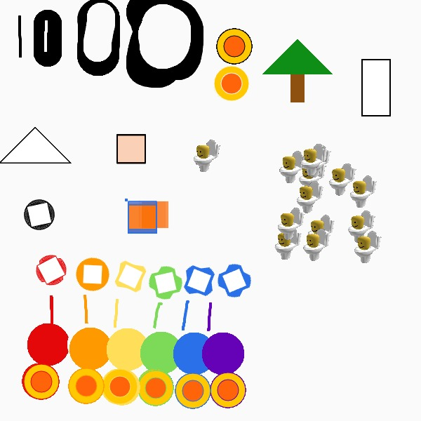
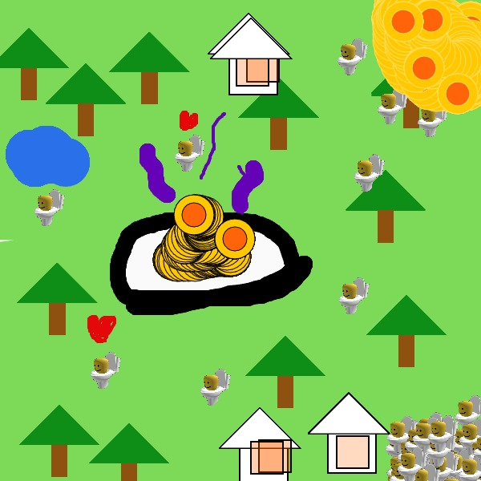

P5JS DIY Photoshop
DIY PhotoShop


A project creating custom brushes that do different things assigned to different keybinds in p5js via code
I made a tool that lets you change between 3 different brush sizes and 6 different colors along with some custom brushes for random things. You can also erase your work as well with the "2" tool.
Its purpose is mainly for fun and to create anything with basic colors, shapes and brush sizes, and was made with flexibility in mind incase others want to use it in ways that break its limits.
Code below: